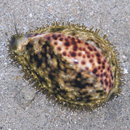
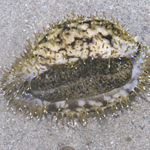
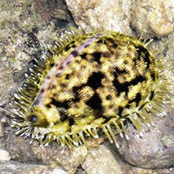
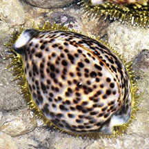
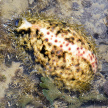
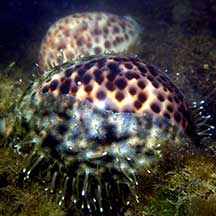

|
|
| shelled snails text index | photo index |
| Phylum Mollusca > Class Gastropoda > Family Cypraeidea |
| Tiger
cowrie Cypraea tigris Family Cypraeidae updated Jul 2020 Where seen? This stunning snail is rare and thus a delight to encounter. It is sometimes seen on our undisturbed Northern shores, near living reefs. It is said to be usually found on live coral colonies, particularly table-forming Acropora corals. Other accounts suggest it is also found in seagrass meadows, and sand and rubble. Features: 8-9cm, can reach 15cm. Shell is oval to pear-shaped, variable in colour from white to nearly black but usually white, yellowish to light blue greyish with dense rounded spots of dark brown to black. The underside is white including the 'teeth'. The mantle may be golden yellow with dark bands and spots that somewhat resembles a tiger's stripes, also described as a 'finger-print' pattern. Sometimes mistaken for a sea slug. When the shell is completely covered in its mantle, it is sometimes mistaken for a sea slug. Here's more on how to tell apart slugs and animals that look like slugs. |
 Terumbu Semakau, Nov 12  |
| Human uses: It is collected for
food and the shell for the shell trade, where it is one of the favourites
of shell collectors. Sadly, they are often over-collected, using destructive
methods such as dynamite fishing. As a result, even elsewhere, it
may be nearly extinct locally or confined to depths over 10 m. Status and threats: It is listed as 'Endangered' in the Red List of threatened animals of Singapore, which adds that although it is considered one of the most common coweries in the Indo-Pacific, and were found on Singapore's reefs in the past, it is now 'exceedingly rare'. The Red List goes on the suggest that sites need to be protected and over-collecting prevented. |
| Tiger cowries on Singapore shores |
On wildsingapore
flickr
|
| Other sightings on Singapore shores |
 |
 |
 Pulau Semakau East, Jun 25 Photo shared by Loh Kok Sheng on facebook. |
 Pulau Semakau (East), Dec 20 Photo shared by Jianlin Liu on facebook. |
|
Links
References
|